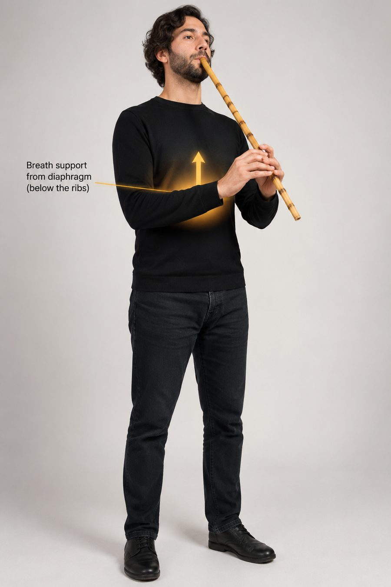
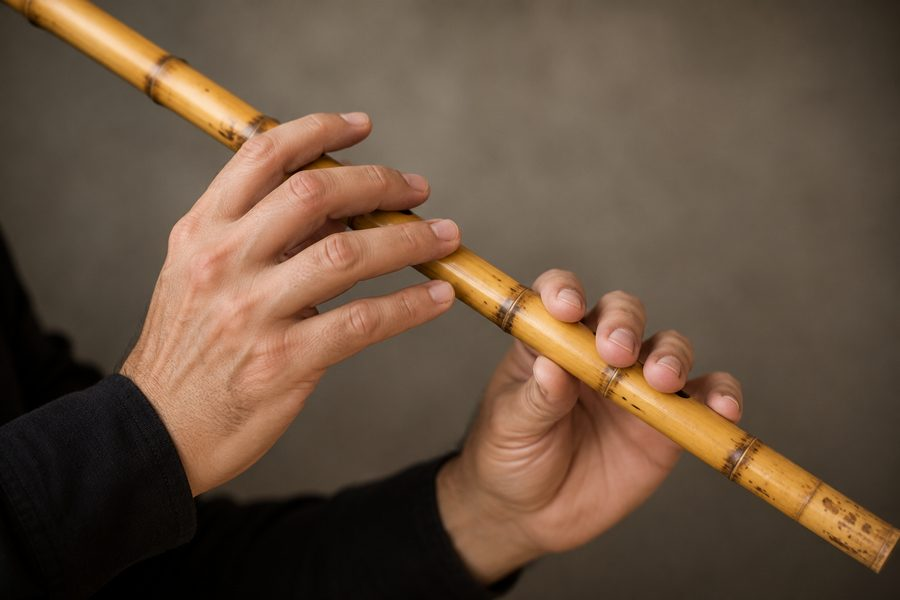

اضغط رقم أي وريقة ذهبية لإعادة تدريب ذلك اليوم متى شئت.
نغمة القرار الطويلة
اثبت على نغمة القرار ٦ ثوانٍ دون تمايل.
C · اليوم ١لا تُنفخ داخل الفتحة

توضع حافة فتحة الناي على حافة شفتك السفلى، عند زاوية فمك — لا في مركزه ولا داخل فمك.
أمِل الناي بزاوية قريبة من ٤٥ درجة، وانفخ الهواء بهدوء وبطء إلى أسفل عبر الحافة — لا في اتجاه الفتحة مباشرة.
اتجاه الميل (يمينًا أو يسارًا) يرتبط مباشرة باختيار يدك العليا في القسم الثالث أدناه: تيار الهواء ينطلق من منتصف شفتيك نحو الحافة الداخلية للقصبة، بميلٍ نحو الجهة التي تُمسك فيها اليد العليا. اختر الميل الذي يشعرك بثبات أكثر، والزم نفس الاتجاه دائمًا.
لا تملأ خدَّيك بالهواء. ادفع النفَس من الحجاب الحاجز لا من فمك. جرّب نطق حرف «ت» بصمت عند بدء كل نفخة — يساعدك على بدء الصوت بوضوح ونظافة.
من البطن، لا من الصدر

ادفع الهواء بالحجاب الحاجز، لا بضغط الفم أو الخدّين — هذا ما يمنحك نفَسًا طويلًا وصوتًا ثابتًا لا يهتزّ.
قف أو اجلس بوضعية مستقيمة. رفع الذقن والعينين قليلًا للأعلى يوسّع الحجاب الحاجز فعليًّا ويساعدك على نغمات أطول وأوضح.
ثبّت قدميك على الأرض، وأرخِ جسدك كله — الكتفان والرقبة تحديدًا. التوتّر هو أكثر ما يُتعب النفَس ويُهزّ الصوت.
اختيارك أنت، لا قاعدة واحدة

بخلاف ما قد يُشاع، لا توجد يد "صحيحة" واحدة فوق الأخرى في مسكة الناي العربي — الأمر تفضيل شخصي يعتمد على راحتك. جرّب الاثنين في أول جلساتك، واختر ما يشعرك بثبات وطبيعية أكثر.
المهم بعد الاختيار: الثبات عليه دائمًا — لا تُبدّل اليد العليا بين جلسة وأخرى، فهذا يُصعّب بناء الذاكرة العضلية لأصابعك.
التوزيع القياسي: ثلاثة أصابع من كل يد على الثقوب الأمامية الستة، وإبهام إحدى يديك على الثقب الخلفي من الأسفل.
بلحمة الإصبع، لا بطرفه

استعمل لحمة إصبعك (الجزء اللحمي المسطّح) لتغطية الثقب بالكامل — لا طرف الإصبع، ولا مفصله. حتى فجوة صغيرة جدًّا تُنتج صوتًا مبحوحًا أو ضعيفًا، خصوصًا في النغمات المنخفضة.
تجنّب وضع خطّ ثنية المفصل فوق الثقب مباشرة — هذا يترك مسارًا دقيقًا يتسرّب منه الهواء دون أن تشعر به بصريًّا.
إن سمعت صوتًا صفيريًّا أو خرج الصوت أعلى مما تتوقّع رغم إغلاقك الثقب، افحص إصبعك أولًا قبل أن تظنّ الخطأ في نفَسك — أغلب هذه الحالات سببها تسريب بسيط لا يظهر للعين.
عايِر نايك
اعزف نغمة القرار (كل الثقوب مغلقة) بنفَس هادئ ثابت. سألتقط «دو» الخاصة بنايك وأحفظها، فلا تعيدها كل يوم.
عايِر توقيتك
لكل عازف تأخير طبيعي بين قرار العزف ووصول الصوت (نفَس، استعداد، فيزياء الآلة). سنقيسه مرة واحدة لنُنصفك في كل تمارين الإيقاع القادمة — لن نظلمك بمقارنتك بصفر مطلق لا يخصّك.
اعزف نغمة قصيرة مع كل نبضة من المترونوم، ثماني مرات، بشكل طبيعي كما تعزف دائمًا.
نجمة جديدة أُضيئت في سماء رحلتك.